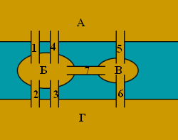
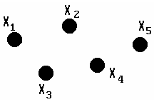
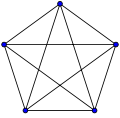
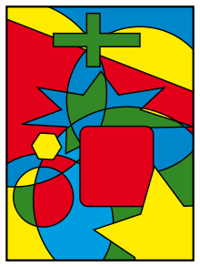
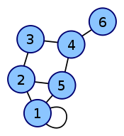

Классические идеи теории графов
История возникновения теории графов
Родоначальником теории графов считается Леонард Эйлер. В 1736 году в одном из своих писем он формулирует и предлагает решение задачи о семи кёнигсбергских мостах, ставшей впоследствии одной из классических задач теории графов.
Издавна среди жителей Кёнигсберга была распространена такая загадка: как пройти по всем мостам, не проходя ни по одному из них дважды? Многие кёнигсбержцы пытались решить эту задачу как теоретически, так и практически, во время прогулок. Но никому это не удавалось, однако не удавалось и доказать, что это даже теоретически невозможно.
В 1736 году задача о семи мостах заинтересовала выдающегося математика, члена Петербургской академии наук Леонарда Эйлера, о чём он написал в письме итальянскому математику и инженеру Мариони от 13 марта 1736 года. В этом письме Эйлер пишет о том, что он смог найти правило, пользуясь которым легко определить, можно ли пройти по всем мостам, не проходя дважды ни по одному из них (в случае семи мостов Кёнигсберга это невозможно).
На упрощённой схеме части города (графе) мостам соответствуют линии (рёбра графа), а частям города — точки соединения линий (вершины графа). В ходе рассуждений Эйлер пришёл к следующим выводам:
- Число нечётных вершин (вершин, к которым ведёт нечётное число рёбер) графа должно быть чётно. Не может существовать граф, который имел бы нечётное число нечётных вершин.
- Если все вершины графа чётные, то можно, не отрывая карандаша от бумаги, начертить граф, при этом можно начинать с любой вершины графа и завершить его в той же вершине.
- Граф с более чем двумя нечётными вершинами невозможно начертить одним росчерком.
Граф кёнигсбергских мостов имел четыре нечётные вершины (т.е. все), следовательно, невозможно пройти по всем мостам, не проходя ни по одному из них дважды.


Теория графов чаще всего применяется для поиска различных путей. Например, кратчайшего пути между двумя заданными пунктами при заданной сети дорог.
Определения теории графов
Граф - совокупность конечного числа точек, называемых вершинами графа, и попарно соединяющих некоторые из этих вершин линий, называемых ребрами или дугами графа.
Граф

Рис. 1
Взвешенным графом называется граф, у которого заданы веса ребёр, которые означать в данной задаче расстояние между городами (если вершины - это города).
Понятия теории графов:

Это определение можно сформулировать иначе: граф - непустое множество точек (вершин) и отрезков (ребер), оба конца которых принадлежат заданному множеству точек.
Вершины графа, которые не принадлежат ни одному ребру, называются изолированными.
Граф, состоящий только из изолированных вершин, называется нуль-графом.
Граф, в котором каждая пара вершин соединена ребром, называется полным. Обозначение: Kn – граф, состоящий из n вершин и ребер, соединяющих всевозможные пары этих вершин. Такой граф можно представить как n–угольник, в котором проведены все диагонали.
Ниже приведены полные графы с числом вершин от 1 до 8 и количества их рёбер.
| K1: 0 | K2: 1 | K3: 3 | K4: 6 |
|---|---|---|---|
 |
 |
 |
 |
| K5: 10 | K6: 15 | K7: 21 | K8: 28 |
|  |  |
 |
 |
Степенью вершины называется число ребер, которым принадлежит вершина (число рёбер с концом в данной вершине).
Дополнением данного графа называется граф, состоящий из всех ребер и их концов, которые необходимо добавить к исходному графу, чтобы получить полный граф.
Граф, который можно представить на плоскости в таком виде, когда его ребра пересекаются только в вершинах, называется плоским.
Многоугольник плоского графа, не содержащий внутри себя никаких вершин или ребер графа, называют его гранью.
Понятия плоского графа и грани графа применяется при решении задач на "правильное" раскрашивание различных карт.
Путем от вершины A до вершины X называется последовательность ребер, ведущая от A к X, такая, что каждые два соседних ребра имеют общую вершину, и никакое ребро не встречается более одного раза.
Циклом называется путь, в котором совпадают начальная и конечная точка (т.е. можно "ходить по циклу" - "ходить по кругу").

Простым циклом называется цикл, не проходящий ни через одну из вершин графа более одного раза.
Длиной пути, проложенного на цикле, называется число ребер этого пути.
Две вершины A и B в графе называются связными (несвязными), если в нем существует (не существует) путь, ведущий из A в B.
Граф называется связным, если каждые две его вершины связны; если же в графе найдется хотя бы одна пара несвязных вершин, то граф называется несвязным.
Деревом называется связный граф, не содержащий циклов.
Трехмерной моделью графа-дерева служит, например, настоящее дерево с его замысловато разветвленной кроной; река и ее притоки также образуют дерево, но уже плоское – на поверхности земли.
Задача: проверка связности графа
Требуется проверить, что граф является связным, то есть что из любой вершины можно по рёбрам этого графа попасть в любую другую. Задано количество вершин N и количество рёбер M. Рёбра заданы парами вершин, которые они соединяют.
Решение задачи:
Граф удобно представить в памяти в виде матрицы смежности (матрицы инцинденций).
Матрица смежности - квадратная матрица (таблица) NxN (N - количество вершин графа), j-ый элемент i-ой строки обозначает есть ли ребро из вершины i в вершину j.
Классические задачи
Проблема четырёх красок
Проблема четырёх красок — математическая задача, предложенная Гутри (англ.) в 1852 году.
Выяснить, можно ли всякую расположенную на сфере карту раскрасить четырьмя красками так, чтобы любые две области, имеющие общий участок границы, были раскрашены в разные цвета.
Иначе говоря, показать что хроматическое число плоского графа не превосходит 4.
О доказательствеК. Аппель и В. Хакен доказали в 1976 г., что так можно раскрасить любую карту. Это была первая крупная математическая теорема, для доказательства которой был применён компьютер. Несмотря на последующие упрощения, доказательство практически невозможно проверить, не используя компьютер. Поэтому некоторые математики отнеслись к этому доказательству с недоверием, что объяснялось не только использованием компьютера, но и громоздкостью описания алгоритма первых доказательств (741 страница), впоследствии были предложены более компактные алгоритмы и скорректирован ряд ошибок. Проблема четырех красок является одним из известнейших прецедентов неклассического доказательства в современной математике.
Представление графа в памяти и при вводе/выводе
Матрица смежности
Для графа из $N$ вершин матрица смежности = квадратная матрица $N \times N$ клеток. Элемент в $i$-ой строке и $j$-ом столбце означает есть ли ребро из $i$-ой вершины $j$-ую вершину.
Если граф взвещенный, то $i,j$-ый элемент равен весу ребра. Отсутствующие рёбра инициализируются специальными значениями (которые можно отличить от весов ребёр). Если мы будем использовать матрицу смежности для поиска кратчайших расстояний, то отсутствующие рёбра удобно проинициализировать в ооочень большое число (заведомо большее любого из тех, которые могут получится при вычислениях). Например, сумма весов всех ребёр + 1 или максимум для типа данных разделить на 2 (если веса ребёр типа LongInt, то это MaxLongInt div 2), чтобы при сложении весов 2-х ребёр не было переполнения.
 
Граф и его матрица смежности.
В качестве примера приведём чтение из файла списка ребёр и формирование в памяти матрицы смежности.
Матрица инциденций
Ребро инциндентно вершине, а вершина инциндента ребру, если вершина является одним из "концов" ребра.
Если $N$ - количество вершин, а $M$ - количество рёбер, то матрица инцинденций, это матрица $N \times M$ элементов, элемент в $i$-ой строке и $j$-ом столбце равен 1 если $i$ вершина и $j$-ое ребро инциндентны и 0 в противном случае.
Списки смежности (для каждой вершины список исходящих ребёр)
Список смежности..... р
1. Задача на Эйлеров путь в графе
Определить последовательность вершин,через которые необходимо пройти, чтобы нарисовать заданный граф. Нельзя отрывать карандаш от бумаги и проходить по одной и той же дуге несколько раз. Граф задан матрицей смежности, вводимой с клавиатуры.
#include <iostream>
2. Обход дерева
По данным, хранящимся в текстовом файле, построить дерево бинарного поиска.Обойти полученное дерево в симметричном и прямом порядке.
#include <iostream>